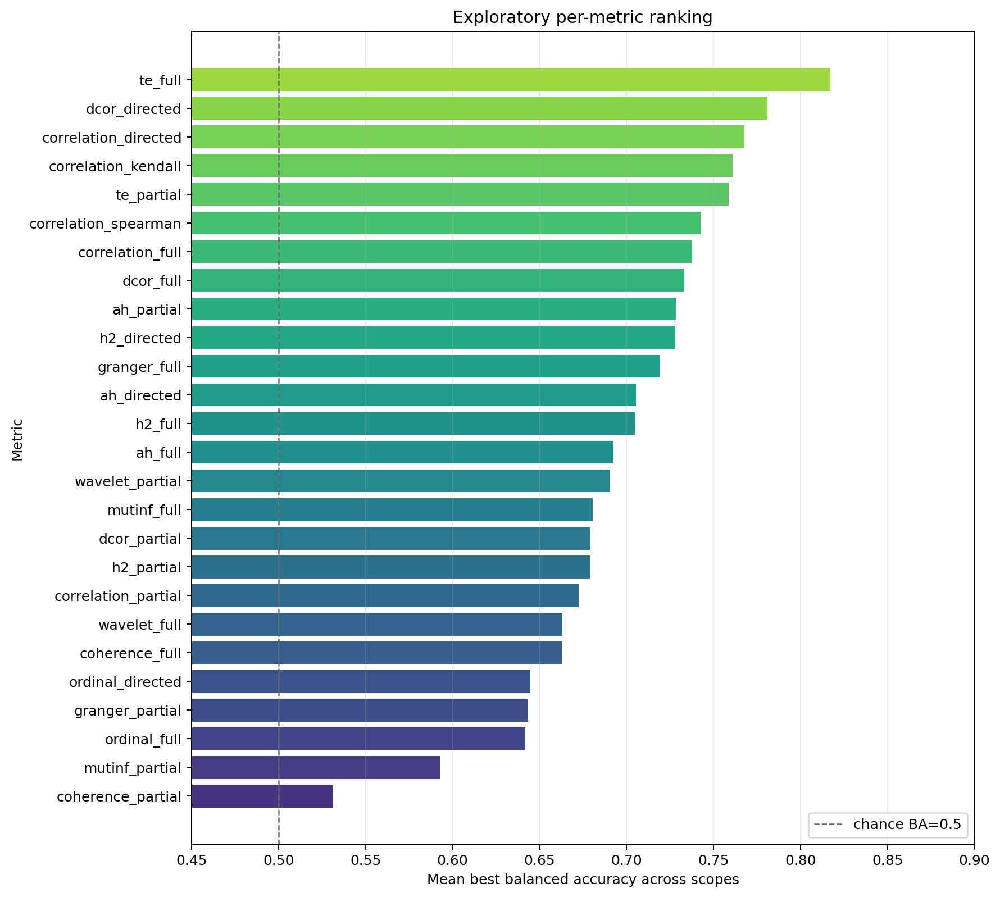
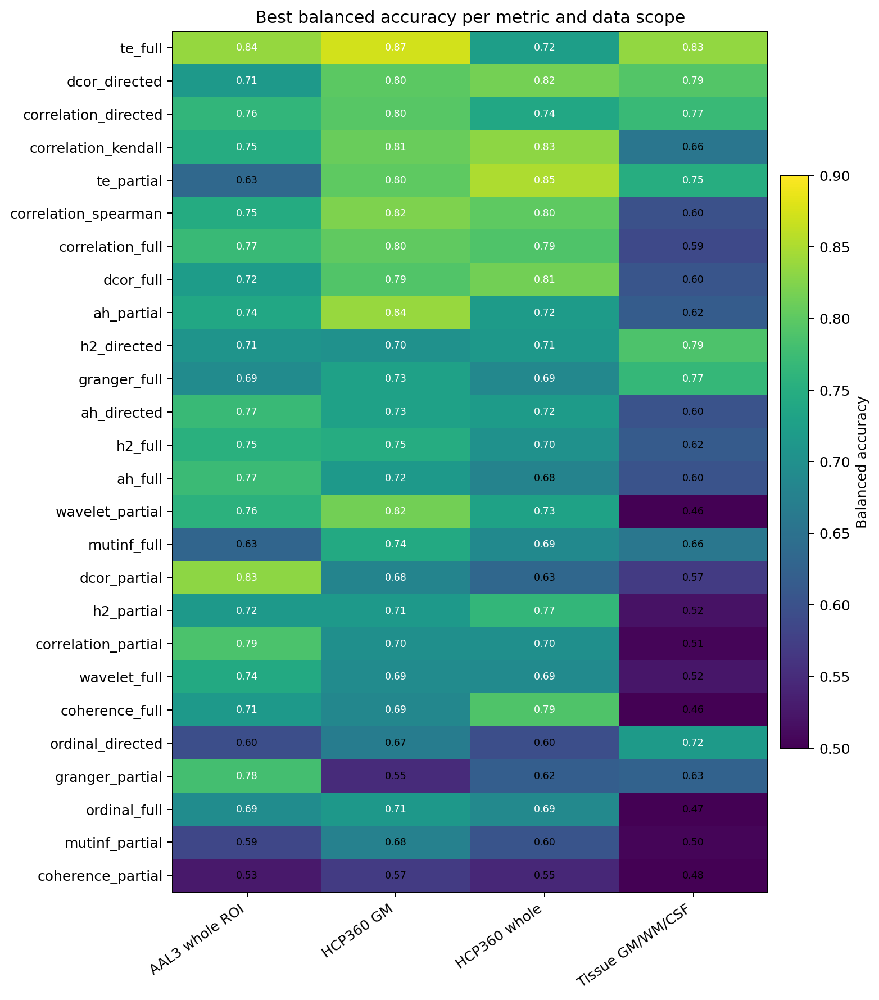
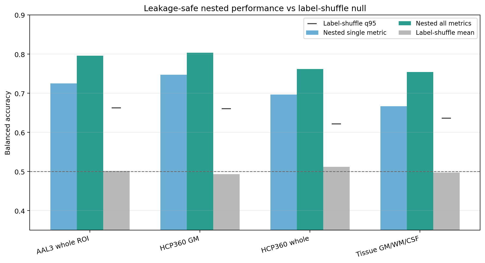
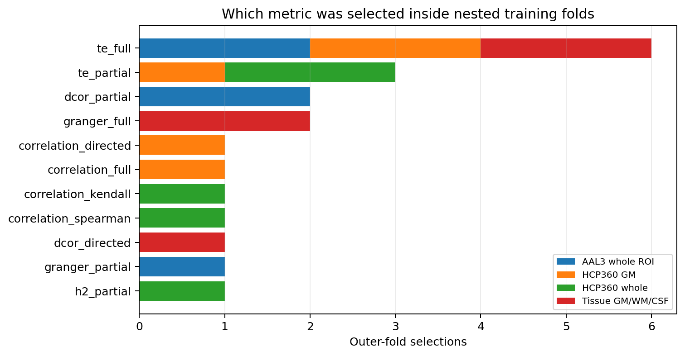
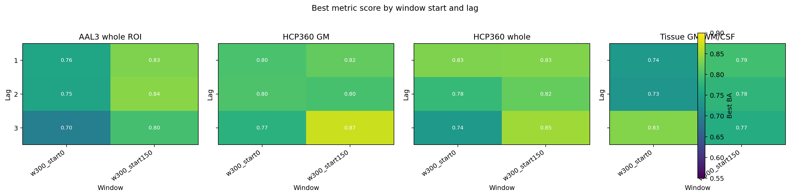
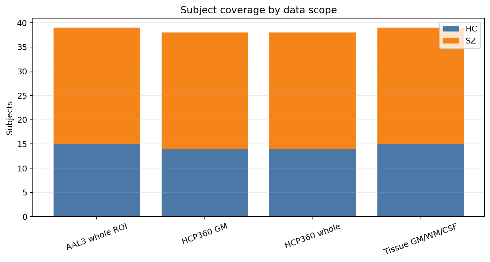
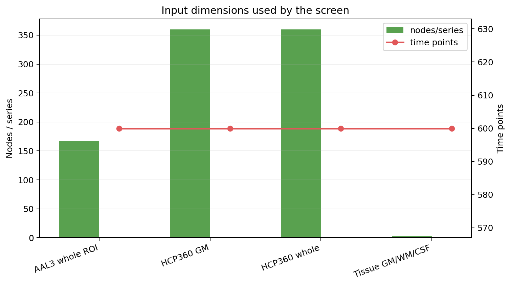
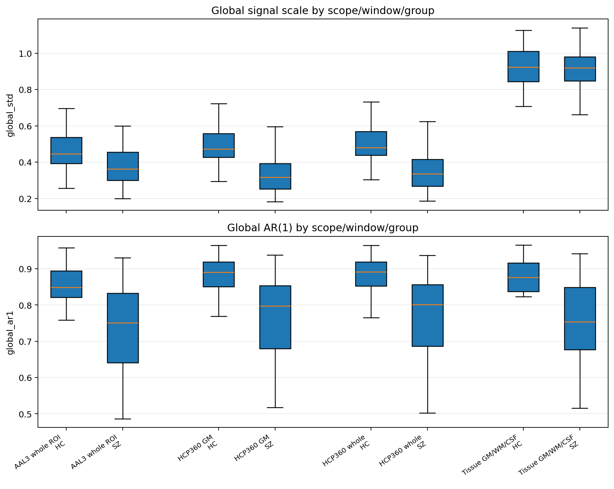
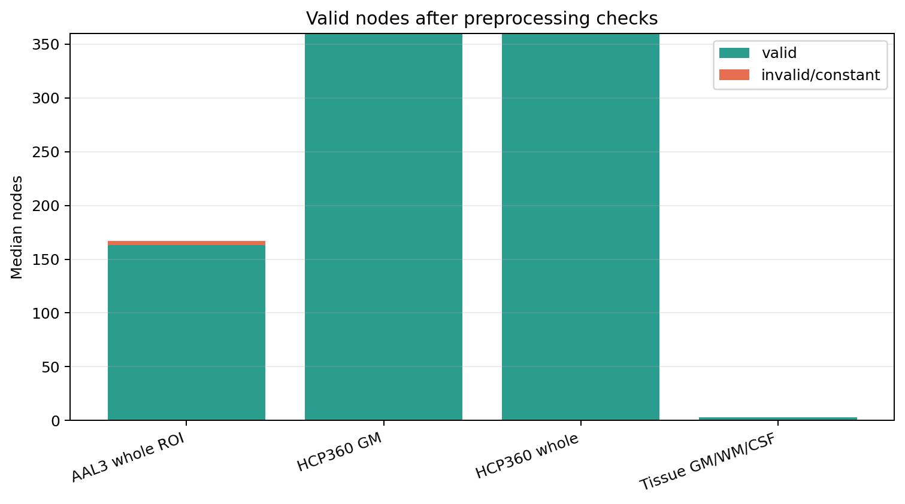
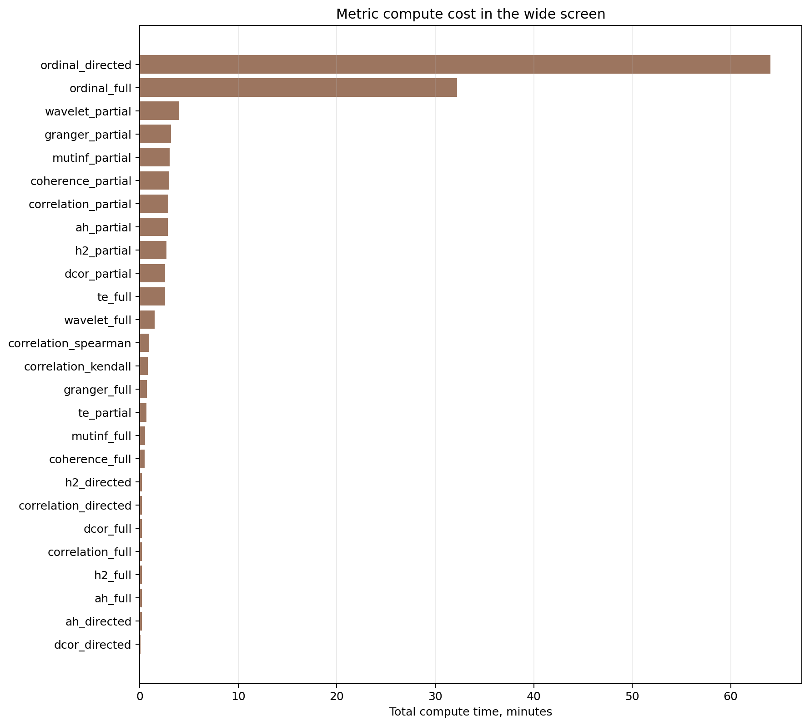

Wide HC/SZ Metric Screening Figures
Source: outputs\run_paths\new_results\2026-06-24_metric-classifier-wide-no-leak-screening. Real HC/SZ figures use 600 time points; 1000-point HDF5 voxel files are not included in this result.
Exploratory per-metric ranking

Metric by scope heatmap

Nested performance vs label-shuffle null

Nested train-fold metric choices

Best score by window and lag

Subject coverage by scope

Input dimensions by scope

QC global distributions

Valid nodes by scope

Compute time by metric
